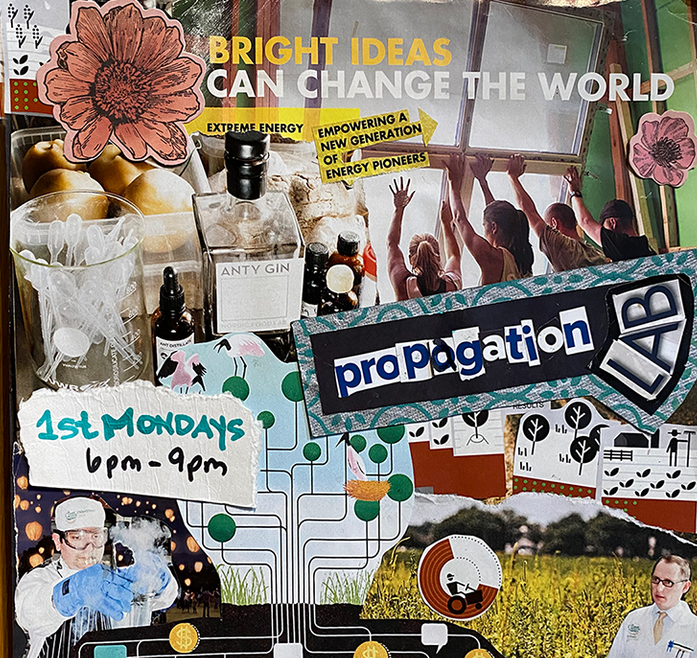

Propagation Lab – Stop Motion Plant
STOP MOTION PLANT are the 2025-2026 Artists in Residence at Agitator Gallery. They host monthly creativity sessions offering open studio time to share ideas, create community and work on projects together. Just like their Salon Series, the Propagation Labs are “masks required” (to keep all safe). Join us, meet new people, make new art and have fun!
MONDAY EVENINGS – First Monday of the month
Labs are 6:30 – 9:00pm / Free to join in!